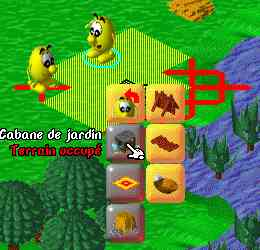
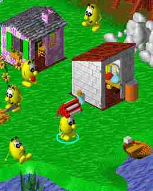

Een nieuw stratigisch spel is uit! Planet Blupi, het gele mannetje
dat heel wat avonturen aangaat. De bedoeling van dit spel is gewoon te overleven, de aarde te redden van de slechte robotten.
(Door middel van tomaten te eten; serres te bouwen;
auto's te maken; ...)
En er is geen keyboard voor nodig,
dit spel werkt helemaal met de compatibele muis!
In elk level zijn er een aantal Blupi's die hout kunnen hakken om huizen te bouwen
en zo tomaten voor hun vrienden te kweken. Boven elk geel mannetje hangt een ring:
als zo'n ring blauw is betekend dat dat Het mannetje genoeg energie heeft. Als
het rood begint te worden moet Blupi tomaten eten om terug genoeg energie te krijgen.
 Met boten over de oceaan dobberen, met auto's over het land snorren, met dynamiet de vijand opblazen, ... Het kan allemaal dankzij dit spel. En het is nog zo groot niet, maar een 11 MB. Maar pas op! ook jij kan ziek worden, dan moet je een medicijn maken van bloemen. Meer info hoeft niet, probeer dit gewoon!!
DOWNLOAD
Hier nu dit spel (Windows, 5 MB zip, muis, versie 1.8)
KLIK HIER voor nog meer screenshots.